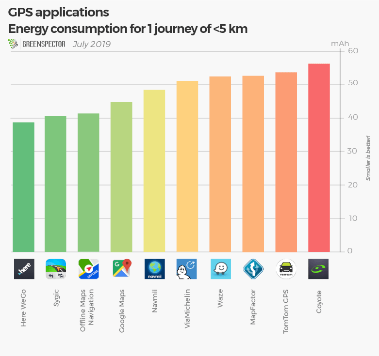
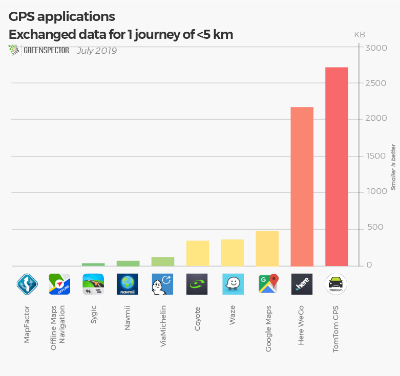
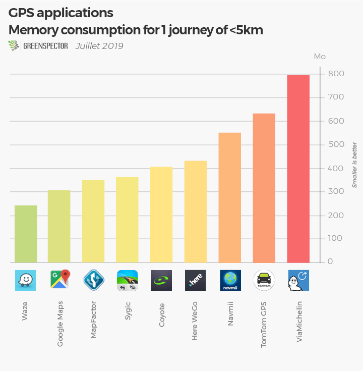
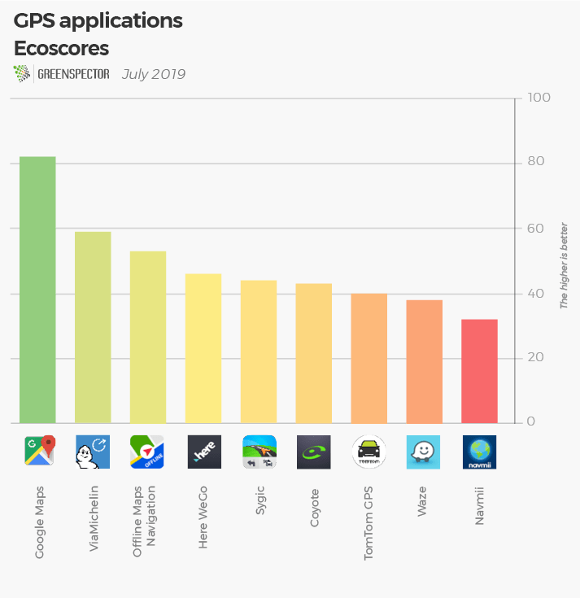

Smartphone navigation apps are our daily tools for car, bike or on-foot navigation. They are regularly used in our business or personal activities. It is also a precious tool for holidays. And it is not uncommon to have two applications installed.
Geolocation activity can be activated on your smartphone but it will cost you an average battery consumption that doubles or even triple depending on the applications and use cases! Pay attention to this parameter for a level of precision that will be in most cases, useless. The particularity of these tools is that they can work in online mode and others only work in offline mode with pre-loading map data before navigation. Even though there are significant differences between these 10 applications for a result of movement and information quite comparable. It’s up to you to choose the most relevant!

For this GPS applications ranking, GREENSPECTOR measured the most used apps on the Google Play Store.
Energy consumption for 1 journey of 3 minutes

Regarding the battery consumption for a simple journey over a period of 3 minutes corresponding to an average simulated movement of 40 km per hour, we observe a very varied consumption between those applications. There is a 45% difference in consumption between Here WeGo and Coyote, both in the online mapping category.
Exchanged data for 1 journey of 3 minutes

In terms of data, Here WeGo and Tomtom GPS are by far the most consuming ones with an exchanged data between 2 and 3 MB. TomTom GPS is both a consuming app in prior mapping (1.3 GB pre-loaded) but also in exchanged data during navigation. ViaMichelin is the least data consuming one for online mapping applications with 113 KB of data consumed.
Memory consumption for 1 journey of 3 minutes

There is a 70% difference in memory consumption between Waze and ViaMichelin, to make this journey in a panel where all applications consume between 241 MB and 800 MB. The application Waze, one of the least consuming, will be able to work on older platforms while the ViaMichelin application will be more demanding on the phone’s memory requirements.
Ecoscore on a standardized journey without movement

The EcoScore reflects the consumption of resources (CPU, memory, data,…) and energy on the first screen of the application. The top 1 award goes to Google Maps, which scores 81 out of 100! In heavy applications in resource consumption and energy TomToom GPS, Waze and Navmii are much more resourceful. MapFactor wasn’t ranked because the application has a different behavior on its first screen compared to the other applications.
Methodology
| Application | Version | Downloads | Playstore grade | Offline | Prior download (GB) | Energy consumption (mAh) | Exchanged data (MB) | Memory consumption (MB) | Ecoscore (/100) |
|---|---|---|---|---|---|---|---|---|---|
| Coyote | 11.1.920 | 1 000 000+ | 3.9 | No | 0 | 56.3 | 0.342 | 431 | 43 |
| Google Maps | 9.67.1 | 5 000 000 000+ | 4.3 | No | 0 | 44.8 | 0.478 | 304 | 82 |
| Here WeGo | 2.0.13173 | 10 000 000+ | 4.4 | No | 0 | 38.8 | 2.2 | 343 | 46 |
| MapFactor | 5.0.63 | 10 000 000+ | 4.5 | Yes | 1.2 | 54.6 | 0 | 0 | N/A |
| Navmii | 3.7.13 | 10 000 000+ | 4.0 | Yes | 2.2 | 48.5 | 0.069 | 550 | 32 |
| Offline Maps Navigation | 17.9.4 | 10 000 000+ | 4.7 | Yes | France=1.4 Regional= 10-200 Mo | 41.5 | 0 | 796 | 53 |
| Sygic | 18.1.4 | 50 000 000+ | 4.4 | Yes | France=2 Regional= 7-250 Mo | 40.8 | 0.035 | 241 | 44 |
| TomTom GPS | 1.17.7 | 10 000 000+ | 4.1 | Yes | 1.3 | 55.9 | 2.75 | 352 | 40 |
| ViaMichelin | 8.3.3 | 5 000 000+ | 4.3 | No | 51.1 | 0.113 | 633 | 59 | |
| Waze | 4.52.5.5 | 100 000 000+ | 4.6 | No | 52.5 | 0.364 | 404 | 38 |
The measurements were made by our laboratory on the basis of a standardized protocol: Smartphone Nexus 6, Android 6, Wi-Fi, low brightness. 4 campaigns were carried out and the value used is the average of these 4 measures.
To carry out these measurements, we measured at the same time a technical course with a phase of loading of the application, a phase of inactivity foreground with displayed app in the foreground and a phase of inactivity with app in the background. This step was done without any movement. Only 9 applications were ranked out of the 10 in ecoscores because one wasn’t comparable with the others on its first screen operation. To measure the movement consumption of these tools, we simulated a movement of less than 5km with a GPS data simulator that allows us to obtain a result very close to a real result.
Find our lastest ranking: Energy consumption of the 30 most popular mobile apps in the world
Any ranking ideas? Contact-us!